独角兽敢达
RX-0
UNICORN GUNDAM
此为分割线，以下为正文资料
机体设定
机体简介
RX-0独角兽高达是机动战士高达独角兽中的机体，机师为巴纳吉·林克斯（Banagher Links）。 联邦宇宙军再编计划之一UC计划下被当做旗舰级开，在MSN-06S新安洲及RX-93νGundam 的基础上开发机体，以传说中的圣灵独角兽为名，象征着信念和希望的美丽的纯白色机体。 机体标号RX-0被赋予了回归原点与开拓新时代的双重意义，装备有安装有被称为“拉普拉斯程式”的特殊OS系统和NT-D系统，拥有独角兽模式和毁灭模式。
机体性能
基本信息
机体编号: RX-0
英文名: UNICORN GUNDAM
制造商: 阿纳海姆公司（Anaheim Electronics ）
全高: 21.7m
重: 23.7t
机体类型: 试作型NT专用MS
传感器范围: 22000m
发电出力: 3480kw
推力: 142600kg
 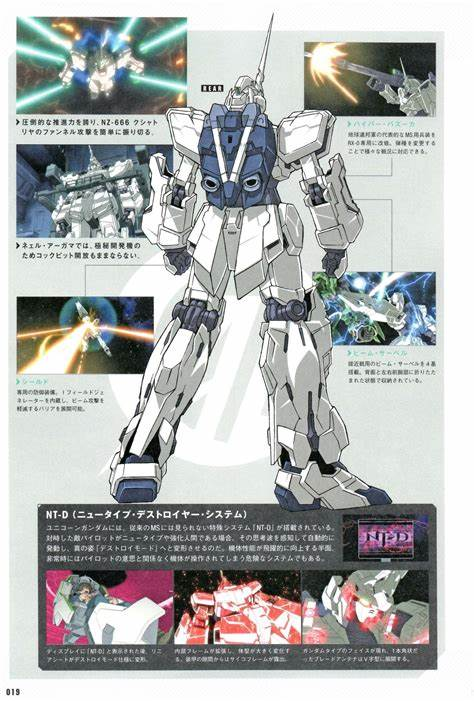
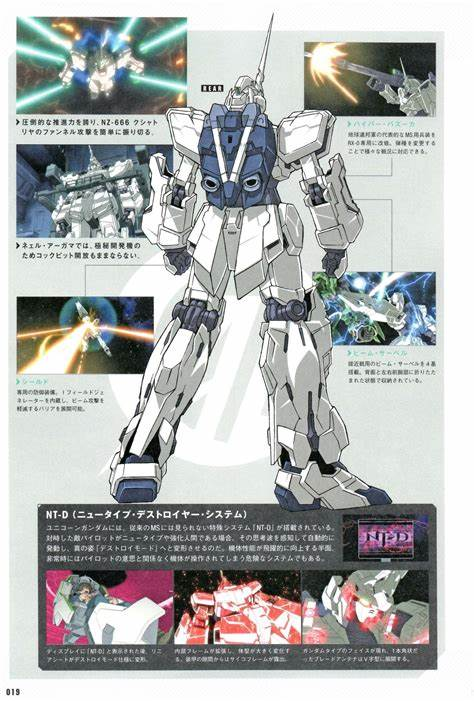
独角兽模式
一般状态下的“限制器”开启式样，特征为头部的独角，因此被称之为“独角兽”。
武器装备
光束军刀:
仅能使用收纳在前臂的两柄
光束马格南:
独角兽的专用步枪，内置能量压缩器，可以发射出具有与大型粒子炮一样威力的光束，使用方面，光束马格南的用法与普通光束步枪无异，不同之处在于马格南使用E-pac再充填系统，每一发粒子炮弹需要一个E-pac弹夹（电池），独角兽可以在腰间带十个E-pac弹夹。
拉普拉斯程式Laplace Program:
专用OS系统，使独角兽高达具有通过检测未知脑波的方式确认驾驶员为NEW-TYPE，从而逐步开启“拉普拉斯程序”内藏资料
Newtype-Destroyer(NT-D) System:
新人类毁灭系统，可以开启毁灭模式Destroy Mode
精神感应框架:
具备脑波传导效能的特殊合金。原理是将电脑晶片微缩至极限后，连同金属粒子一起铸造进MS的框架。将驾驶员的意识反映在机体动作上，两者之间做到高度连动。驾驶员不必再“操作”机体，几乎光靠思考便能进行控制
盾:
独角兽高达专用盾牌，内置I-field
generator，I-field可以在两种形态下使用。在全装甲的情况下，独角兽高达共配备三只盾牌，从而提供了接近360度的I-field保护。介于精神骨架的特性，独角兽高达可以让新人类直接操控没有任何推进器的盾牌，使其成为浮游盾。装配有I-力场发生器，可发出微型I-立场。
毁灭模式
开启Destroy Mode后，头部的独角一分为二成为“V字型”，封闭式面罩完全打开体内部全框架扩张，体型完全改变，装甲结合部滑开，露出散发着诡异红色光芒的精神感应框架，全高由19.7M变为21.7M，头部的独角（即NT-D感应装置，有感应脑波的功能）一分为二成为“V字形”，封闭式面罩完全打开，露出传统意义上的“GUNDAM”造型。
武器装备
光束军刀:
独角兽高达本身有四把光束剑，期中两把置于前臂，继承了新安州的设计理念，手臂中的光束剑直接在连接在前臂的情况下使用，而进入毁灭状态后，背包中会出现另外两把光束剑。
高出力光束枪:
独角兽的专用步枪，内置能量压缩器，可以发射出具有与大型粒子炮一样威力的光束，使用方面，光束麦林枪的用法与普通光束步枪无异，不同之处在于麦林枪使用E-pac再充填系统，每一发粒子炮弹需要一个E-pac弹夹（电池），独角兽可以在腰间带十个E-pac弹夹。
光束格林机枪:
格林式光束武器，拥有相当高的射速。格林光束枪是原本是新吉翁的武器，但是由于独角兽是又Anaheim所生产的标准型机体，所以可以使用Anaheim的一切常规武器。
新超级高能火箭筒:
地球联邦的标准配置武器，不过hyper
bazooka的长度会随着独角兽的形态变化而改变。全装独角兽装备了两个hyper
bazooke，每个附加6颗手雷，一个Grenade Launcher和triple missile pod
盾:
独角兽高达专用盾牌，内置I-field
generator，I-field可以在两种形态下使用。在全装甲的情况下，独角兽高达共配备三只盾牌，从而提供了接近360度的I-field保护。介于精神骨架的特性，独角兽高达可以让新人类直接操控没有任何推进器的盾牌，使其成为浮游盾。装配有I-力场发生器，可发出微型I-立场

全装甲模式
RX-0 全装甲独角兽高达（Full Armor UnicornGundam）是RX-0独角兽高达的机师巴纳吉·林克斯的好友拓也·伊礼在拟·亚加玛上期间所设计的独角兽高达的加强形态。 与以往其他类型全装MS不同的是，全装独角兽高达本身并没有任何新增的装甲，仅仅新增了众多的武器装备，可以说是众多武器的集合体。该机在武器配备上相当平衡合理，而且还能发挥出独角兽高达的最高战斗力。新的装备包括，两个高能火箭炮、24颗手雷、两个3联装导弹发射器、6把光束加特林机枪、2柄光束戟等等，以及两个附加的I力场发射装置的盾，外加两个巨型推进器。而当武器的弹药用完后，这些武器都可随时卸除，从而减少不必要的重量。此外，在NT-D模式发动时，可以与盾牌内藏的精神感应骨架产生共鸣，在无重力环境下可以当做浮游炮使用。
内部环境
位于胸部的全周天屏幕/线性座椅单人驾驶舱
尺寸
高度：19.7m；全高：21.7m（NT-D模式下） 本体重量 45.1吨
全备重量76.9吨
装甲材料及结构
高达尼姆合金/超复合弹性耐冲抗热陶瓷；全身精神感应框架
发动机功率
动力源：米诺夫斯基超小型核聚变反应堆。出力：3480kw（Destroyer模式时测定不能）
推进力
189700kg（Destroyer模式时测定不能） 加速度 -
装备及设计特征
特殊系统：拉普拉斯程序、NT-D系统
感应器有效半径：
22000m（Destroyer模式时测定不能）
固定武装
头部60mm火神炮×2（NT-D模式下可发射光束弹）；光束剑×4；盾牌（内含I力场发生器；光束加特林机枪×2）×3（NT-D模式下可作为浮游炮）；榴弹架（含手榴弹×3）×4；高能火箭炮（含榴弹发射器；反舰导弹发射器（含反舰导弹×3）；榴弹架（含手榴弹×3）×2）×2
选用武装
光束戟×2；武装装甲DE（含护盾、米加粒子炮）×3（模型，可装备于护盾之上）
选用手部武器
光束马格南步枪×2
 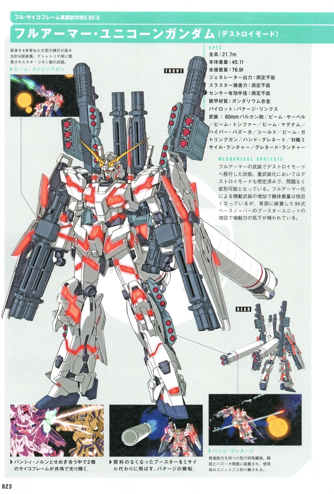
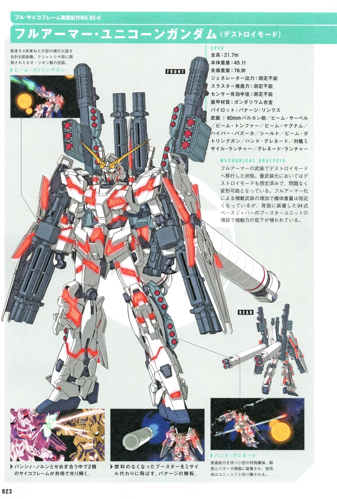
出场背景
时间是在第二次新吉翁战争、别名“夏亚的逆袭”终结后的3年，宇宙世纪0096年。 在工业殖民地“工业7号”上进行了一项秘密交涉。被认为是地球联邦政府暗中操控的“毕斯特财团”打算将把最高机密“拉普拉斯之箱”交给新吉翁的残党军“黑袖章”。 也就是将本机作为开启“拉普拉斯之箱”的钥匙交给“黑袖章”。于此同时，因为交易情况的泄露，被地球联邦军发现，直接导致了后者军事介入。 战火中，巴纳吉无意中发现了独角兽高达和毕斯特财团的第二代当家卡帝亚斯·毕斯特，被对方告知自己的身世后，接受了对方的托付，成为“RX-0 独角兽”的机师。
相关人物
机师
巴纳吉·林克斯，机动战士高达独角兽主人公，卡帝亚斯·毕斯特之子，因其母不愿意他卷入毕斯特家族的命运在其年少时由其母亲带领离开毕斯特家族前往其它移民星系居住。后因为母亲的死亡，被未曾想见过的父亲安排进入阿纳海姆公司下属学校学习。后与神秘少女奥黛莉·伯恩（Audrey Burne）（米妮瓦·扎比）相遇，卷入了“拉普拉斯之盒”的事件之中。 成为独角兽高达的机师后，留在了联邦军的新·亚嘉玛号 （NAHAL AGAMA），之后作为拟·阿咖玛号的编外人员与“黑袖章”展开斗争。曾经通过感应力场与玛莉妲·库鲁斯和安杰洛·梭裴进行了高度的灵魂交流，之后与玛莉妲成为知己，与安杰洛成为死敌。 在最后决战中，因目睹玛莉妲之死，接触到了感应力场之海的存在，为了保护新·亚嘉玛号以及“墨瓦腊尼加”上的众人，开启了最终的感应力场，与独角兽高达高度连动，通过精神感应框架，融合力场之海中众多的意识，使本身变成“独角兽高达”这独一无二的究极存在，挡住了来自于殖民卫星雷射的攻击，并将来袭的MS队伍全灭后，在利迪·马瑟纳斯驾驶的报丧女妖的跟随下，前往未知的宇宙。 最后，在众人的呼唤下，巴纳吉的自我意识重新回归，驾驶着独角兽高达返回“墨瓦腊尼加”。
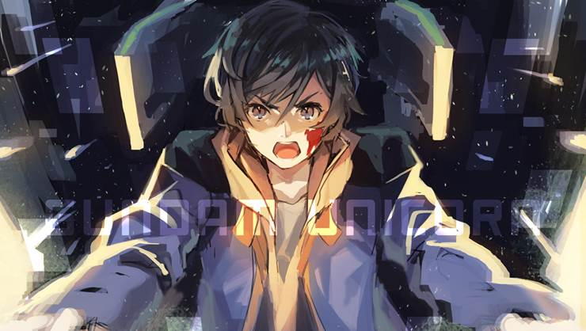剧情概况
EP01 独角兽之日
宇宙世纪0096年——。点燃新吉翁与地球联邦军战火的“夏亚之乱”事件发生后的第三年。在工业用太空殖民地工业7号上居住的少年巴纳吉･林克斯，与一名自称奥黛莉･伯恩的神秘少女相遇。巴纳吉决定帮助奥黛莉，一起阻止毕斯特财团与新吉翁残党军“带袖的”进行战争火种“拉普拉斯之盒”的交易。然而同样为了阻止交易而潜入殖民卫星的地球联邦军和“带袖的”开战，使殖民地沦为战场。巴纳吉为寻找奥黛莉，在战场上奔走之时，与“拉普拉斯之盒”的“钥匙”——机动战士独角兽，命运般相遇了。
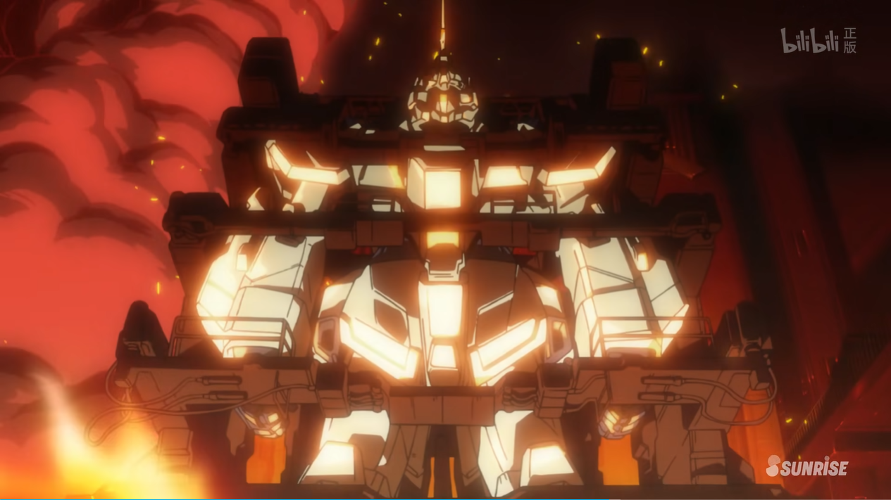EP02 红色彗星
现任毕斯特财团家族首领的卡帝亚斯，将“拉普拉斯之盒”的“钥匙”机动战士独角兽托付给了少年巴纳吉・林克斯，与“带袖的”成员玛莉妲･库鲁斯中校驾驶的刹帝力交战后，被隆德・贝尔所属的攻击型登陆舰“拟・阿卡马”号捕获。同时在舰上的，还有巴纳吉的朋友拓也和米寇特，以及为阻止“盒子”的交接，而与卡帝亚斯接触过的少女奥黛莉･伯恩。敌方一台MS单独对拟・阿卡马号发起了挑战。 这架红色MS被称为新安州，驾驶者弗尔･伏朗托是“带袖的”领袖，被称为“夏亚再世”的男人。
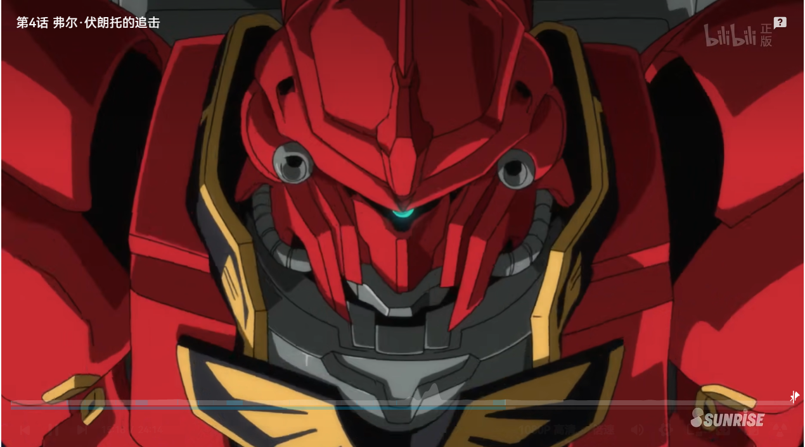EP03 拉普拉斯的亡灵
巴纳吉为了保护米妮瓦，驾驶独角兽高达出击，与弗尔･伏朗托的新安州在战斗时被捕获，囚于新吉翁残党军“带袖的”据点–资源卫星帛琉。为将夺回巴纳吉和独角兽，联邦军中率领特种作战部ECOAS的塔克萨中校，配合拟・阿卡马号，对帛琉发动袭击。 巴纳吉趁乱带着独角兽逃出了帛琉，然而… NT-D系统的启动揭示了通往“拉普拉斯之盒”的路标，因此弗尔･伏朗托派出了玛莉妲和她的刹帝力，挡住了巴纳吉的去路。
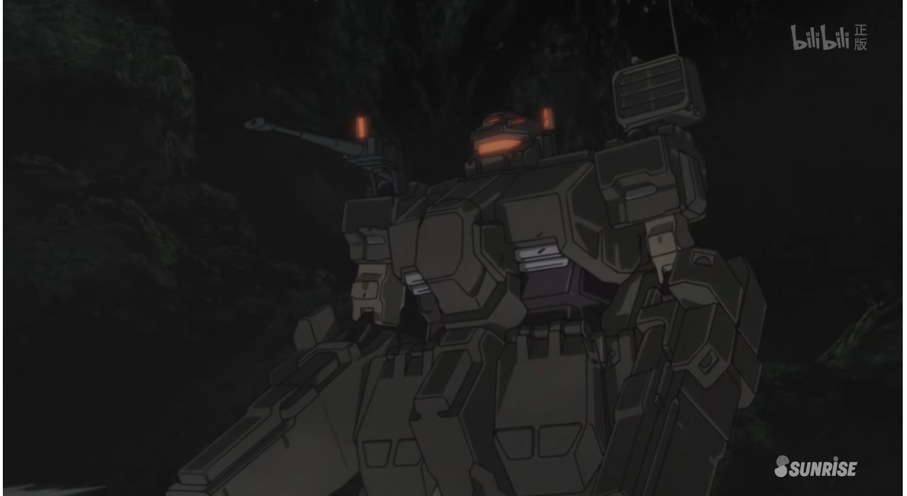EP04 在重力井底
围绕着“拉普拉斯之盒”的战斗波及到地球，甚至连地球联邦政府的首都达喀尔，也遭到了战乱波及。地球联邦政府的中心人物罗南･马瑟纳斯，为了阻止“盒子”的开启，与隆德･贝尔的司令布莱特･诺亚布接触。另一方面，降落在地球的巴纳吉，正前往特林顿基地，那里有关于“盒子”的新消息。然而，罗妮却受到吉翁残党的愤怒驱使，驾驶MA尚布罗大开杀戒。
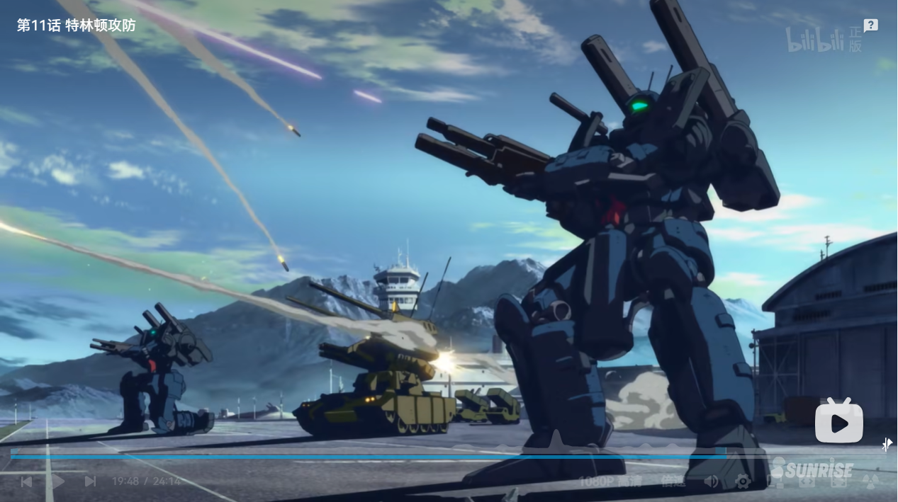EP05 黑色独角兽
巴纳吉遭到黑色机动战士报丧女妖突袭而被囚禁。 在无路可逃的情况下，巴纳吉仍然坚持隐藏独角兽高达揭示的指向“拉普拉斯之盒”的新坐标。隆德・贝尔队的司令布莱特从巴纳吉身上，看到了历代高达驾驶员所具备的坚持与可能性，为此不惜向并肩作战过的老朋友求助。另一方面，从罗南处被引渡至玛莎处的米妮瓦，被当成能够控制巴纳吉的棋子，被移送到超大型运输机迦楼罗号。围绕“盒子”的战场，再次转向高空，最终再次飞往宇宙――。
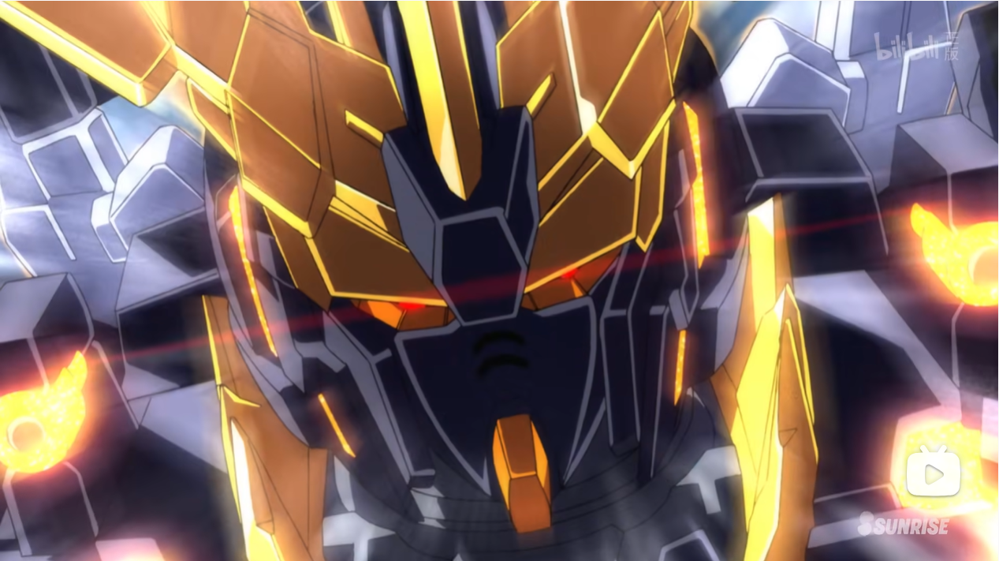EP06 宇宙与地球
由于弗尔·伏朗托的介入成功逃离地球联邦军舰队追击的拟・阿卡马号，被迫与“带袖的”共同作战。另一方面，伏朗托公布了对付联邦军的秘策，企图问出指向“拉普拉斯之盒”的下一个坐标。而他口中冷酷无情的未来，使得巴纳吉与米妮瓦感到毛骨悚然。此时，一艘联邦军的巡逻舰接近了拟・阿卡马号。
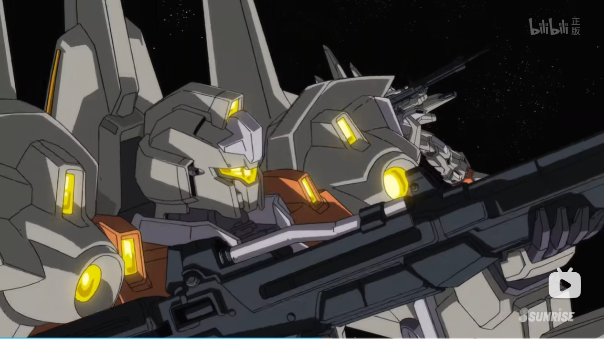EP07 彩虹的彼端
具备颠覆地球联邦政府可能性的“拉普拉斯之盒”的所在位置终于大白天下。 那就是一切事件的起始之地，工业7号的墨瓦腊泥加。毕斯特财团的现任领导者玛莎‧毕斯特‧卡拜因，为了保护财团的利益，和外甥亚伯特･毕斯特陪同地球联邦政府中心领导、移民评议会议长罗南･马瑟纳斯，直接前往夏延山军事基地，企图终结这次事件。 另一方面，为了追上率先行动的弗尔・伏朗托夺取“拉普拉斯之盒”，巴纳吉・林克斯迅速赶往工业7号，却被驾驶报丧女妖・命运女神型的利迪，以及驾驶罗森．祖鲁的安杰洛挡住了去路。 首先抵达“墨瓦腊泥加”，来到“盒子”守护者塞亚姆跟前的人，究竟会是……。
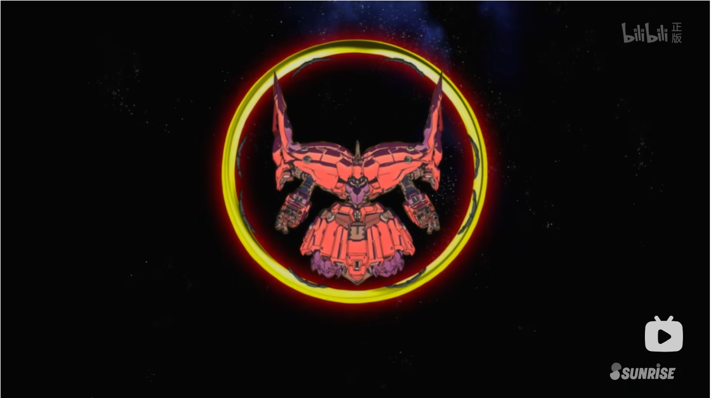